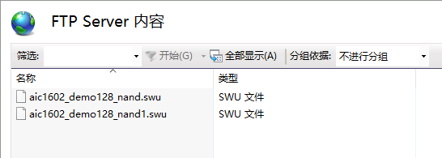
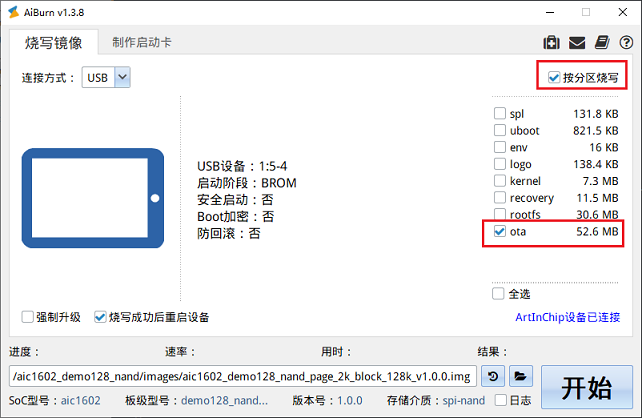

SPI NAND 平台测试指南
测试环境
-
硬件
-
开发板（本文以 d211_demo128_nand 为例）
-
-
软件
-
PC 端的串口终端软件, 用于 PC 和开发板进行串口通信
-
HTTP 或 FTP 服务器, 网络升级方式需要使用
FTP 服务器窗口如下所示：

注：编译两份 OTA 升级包（Kernel 和 RootFS 不同），测试升级是否成功。
-
编译 OTA 升级包
执行 lunch d211_demo128_nand 命令进入主系统，执行 m 命令编译整个主系统获得 Luban 镜像 和 OTA 升级包。
生成 OTA 升级包地址为 output/d211_demo128_nand/images/swupdate/d211_demo128_nand.swu。在post-image.sh 文件中 swupdate_pack_swu 函数用于编译生成 OTA 升级包。
本地升级方式
-
烧录 OTA 升级包到 OTA 分区
-
将 OTA 升级包拷贝到
target/d211/demo128_nand/ota目录下面：cp ~/Luban/output/d211_demo128_nand/images/swupdate/d211_demo128_nand.swu ~/Luban/target/d211/demo128_nand/ota
-
执行 m 命令编译 ota 分区 镜像
ota*.ubifs到 Luban 烧录镜像 d211_demo128_nand_page_2k_block_128k_v1.0.0.img 中。 -
通过 AiBurn 方式单独烧录
ota*.ubifs到 ota 分区中，如下图所示： -
挂载 OTA 分区
重新上电，挂载 ota 分区 到 mnt/ota 目录下：
/etc/swupdate_main start
检查 OTA 升级包是否存在, 默认应该存在 d211_demo128_nand.swu 和 this_is_a_test_file 两个文件
-
-
主系统下启动升级命令
./usr/lib/swupdate/swupdate_cmd.sh -i /mnt/ota/d211_demo128_nand.swu -e stable,upgrade_recovery
-
-i：本地升级文件的路径，根据具体路径配置。
-
-e：需升级的项目。
执行该命令后，系统自动完成升级。
-
SD 卡升级方式
-
将 OTA 升级包拷贝到 SD 卡根目录下。
-
插入 SD 卡，Luban 中会自动挂载 SD 卡。
-
执行以下命令启动 OTA 升级：
./usr/lib/swupdate/swupdate_cmd.sh -i /mnt/sdcard/d211_demo128_nand.swu -e stable,upgrade_recovery
网络升级方式
网络升级方式：
-
设备端为服务器, 电脑为用户端；
-
设备端为用户端, 电脑为服务器；
实际生产过程中, 使用第二种方式
- 准备工作
主系统和 Recovery 系统在启动时自动搭建好网络环境, 需要在启动脚本里面添加好对应的配置
ifconfig eth0 up ifconfig eth0 192.168.1.200
- 主系统下启动升级命令
主系统自动联网完成，执行下面命令启动升级
./usr/lib/swupdate/swupdate_cmd.sh -d -uftp://192.168.1.100/d211_demo128_nand.swu -e stable,upgrade_recovery
如果搭建的是 HTTP 服务器，启动命令如下：
./usr/lib/swupdate/swupdate_cmd.sh -d -uhttp://192.168.1.100/d211_demo128_nand.swu -e stable,upgrade_recovery
- 准备工作
升级过程说明
参考 sw-description 和 swupdate_cmd.sh 文件，升级过程会进行两次重启，具体过程如下所示：
-
运行主系统。
-
启动升级命令，升级
recovery 分区、引导等。 -
重启，进入 Recovery 系统。
-
升级 Kernel、RootFS 等。
-
重启，进入主系统，升级完成。
具体参考 OTA 设计部分。
升级判断
从程序打印 log 差异和 RootFS 中文件差异判断当前运行的版本。Recovery 系统启动内核时打开了内核信息，主系统默认关闭，通过内核打印信息可以判断程序运行的系统。